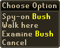

")
Penguin Hide and Seek
Penguin Hide and Seek is only accessible to RuneScape members. Please subscribe to get this feature.
Introduction

Larry knows that those people are agents of the evil penguin intelligence organisation, the KGP. His paranoia is probably perfectly pertinent.
Now is your chance to help Larry, now you can serve the good and righteous people of RuneScape in defying the proletariat penguin peril: Larry needs you!
Requirements
There are no requirements to start looking for penguin spies, although they can be found almost anywhere in RuneScape, so you may need to have completed quests such as Underground Pass to reach areas they may have infiltrated.
Getting Started

Because there are only ten spies at any one time, and they are constantly on the move, it's probably best if you simply try to spot them as you carry on your usual activities, or work with friends to find out where they are - hunting for them on your own is a much more challenging task.
If the constant movements and replacement of the penguin moles (that's intelligence-talk for 'spy') weren't enough, the KGP furnish each of their agents with a disguise suitable to their surroundings. These disguises are near-perfect, so the spies are only easy to spot when they're on the move.
For reference, those in the Feathery Bolshevik Investigations (or FBI, for short) have composed the following dossier of penguin disguises:
 Barrel |
 Bush |
 Cactus |
 Crate |
 Rock |
 Toadstool |
 When you think you've spotted one of the perilous penguin infiltrators, simply right-click on it and select 'Spy-on'. This will take note of the location of the spy and its dubious activities so that you can report them to Larry.
If you're a bit stuck, you can ask Larry for a hint. He has an extensive network of agents (or people who happen to mention that they've seen penguins around), and hears many rumours. If you're a distance away, you can use the NPC Contact spell from the Lunar spellbook to get a hint. Larry will also provide you with a notebook to keep track of which spies you've spied.
Polar Bear Agents
 If you've completed Hunt for Red Raktuber, Larry will be replaced by Chuck, an agent for the PBJ. In addition to your usual duties tracking down penguin spies, he'll ask you to keep tabs on one of his own agents. Polar bears, being much larger than penguins, cannot so easily conceal themselves, and are forced to hide in wells. Each week, Chuck's agent will move to a new well, and it's up to you to keep Chuck appraised of the situation.
If you've completed Hunt for Red Raktuber, Larry will be replaced by Chuck, an agent for the PBJ. In addition to your usual duties tracking down penguin spies, he'll ask you to keep tabs on one of his own agents. Polar bears, being much larger than penguins, cannot so easily conceal themselves, and are forced to hide in wells. Each week, Chuck's agent will move to a new well, and it's up to you to keep Chuck appraised of the situation.
Rewards
In addition to the general feeling of well-being you get from keeping an eye on these incredibly dangerous individuals, Larry (or Chuck) is happy to exchange your intel for cash or some extra training. He keeps track of what he owes you with Penguin points, which may be increased if he trusts you (by completing Cold War, and even further if you complete Hunt for Red Raktuber).
Because half of the penguin spies are in relatively easy locations to access, you will receive 1 point for each of these. The harder penguins to find will also be worth 1 Penguin point unless he trusts you, in which case they will be worth 2.
Penguin points can be traded in for either 6,500 coins per point, or experience in the skill of your choice.
You can earn a maximum of 16 Penguin points per week if you've done all of the penguin quests, and Larry (or Chuck) will happily keep track of up to 50 points while you decide what you'd like to spend them on.
Development Team
Developer: Nancy J
Graphics: Kavi M, Alex R, Mark C, Daniel J
QA: Ben L, Dan G, Dan O'R
Audio: Grace D

More articles in
Distractions and Diversions
|
|
|
Further Help
If this article does not help you, you may find the following sections of the RuneScape site helpful:
|
|